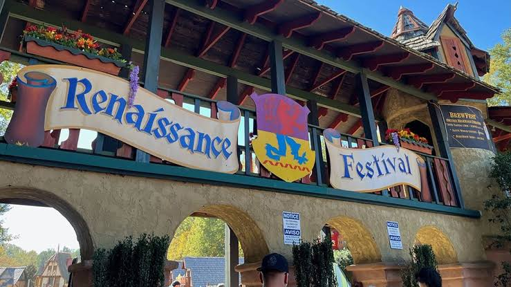

Community Spotlight: Carolina Renaissance Festival
The Carolina Renaissance Festival is an immersive medieval experience that transports visitors back to the days
of chivalry and courtly life.
Visitors of all ages will be
in awe of the authentic costumes, skilled craftsmen, and exciting performances.
Waste no time retrieving
your tickets for this tremendous festival!

Here are some of the fantastic attractions you can expect:
- Jousting Tournaments: Witness the thrill of knights competing in epic jousting matches.
- Live Entertainment: Enjoy live music, theatrical performances, and interactive shows.
- Artisan Market: Explore a wide array of handcrafted goods, from jewelry to pottery.
- Medieval Cuisine: Savor traditional foods and beverages, including turkey legs and mead.
- Games of skill: Participate in various medieval games and competitions that will test your abilities.
Here are some things to keep in mind to make sure your trip goes smoothly:
- Leave early to avoid traffic and long lines.
- Wear comfortable shoes for walking around the festival grounds.
- Check the weather forecast and dress accordingly.
- Take advantage of the free activities and performances.
"This has been the best year for the festival yet!" - A real person
Head back to sea (homepage)